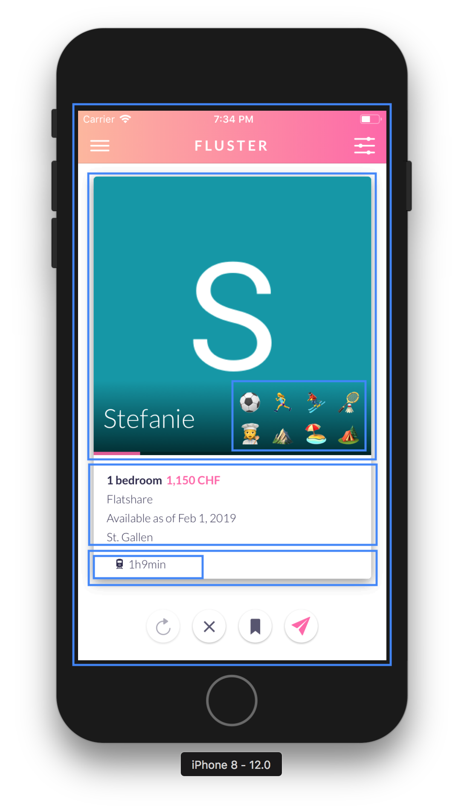
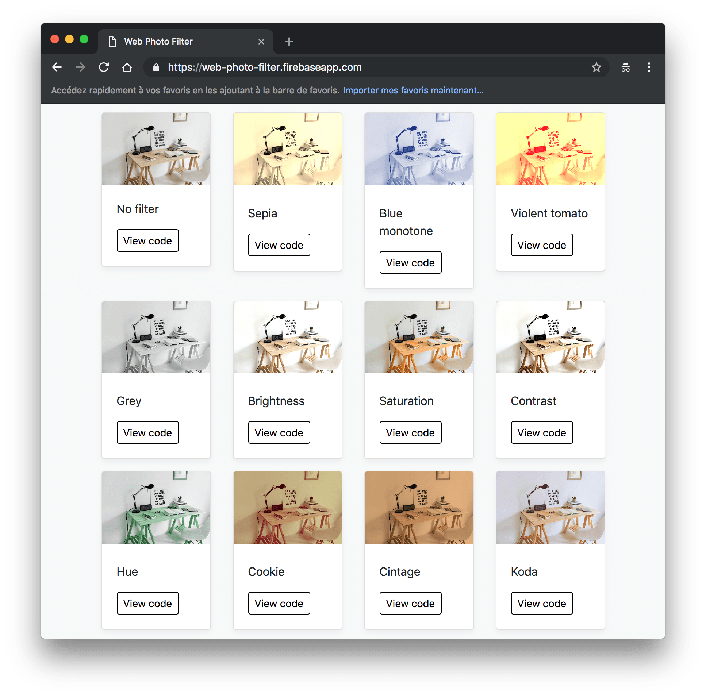
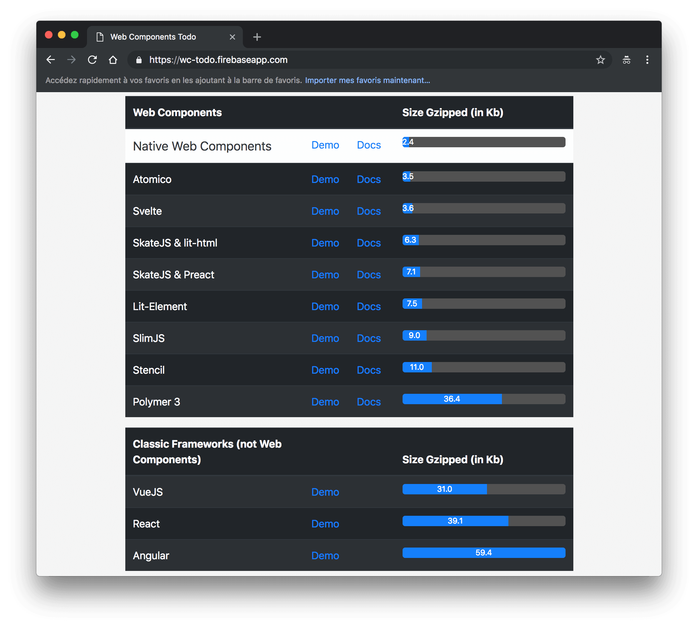
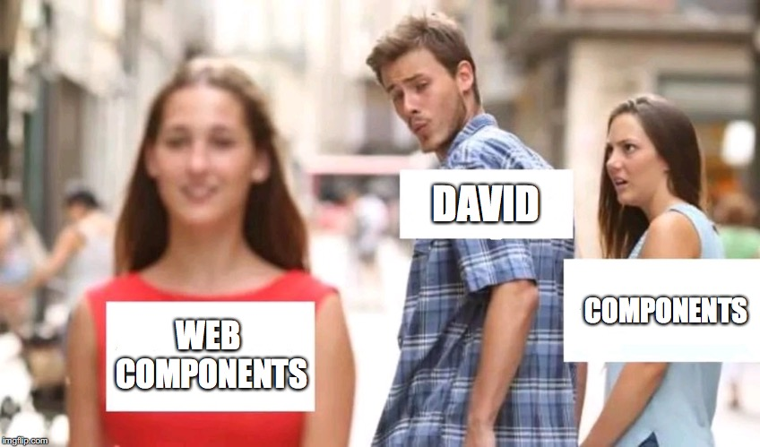
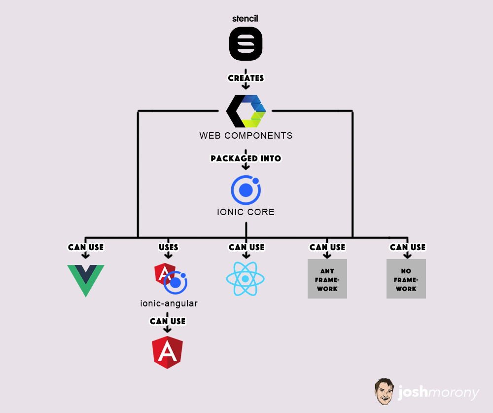
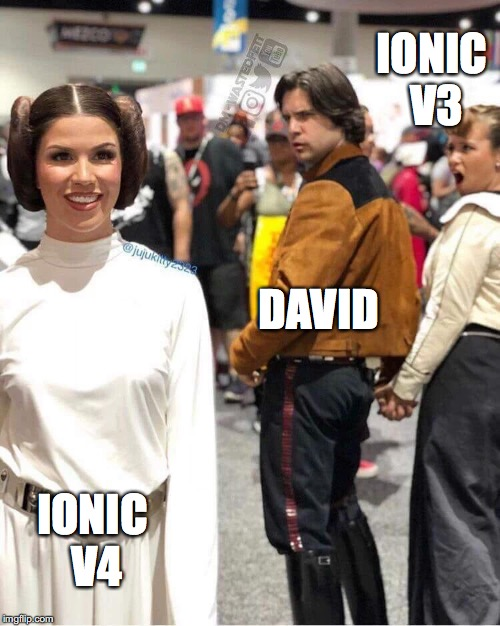

Ionic v4, web components, shadow dom and beyond 🚀
Introduction

David Dal Busco
Founder of Fluster
Organizer of the Ionic Zürich Meetup
Zürich, Switzerland
Overview
- Web components
- Shadow dom
- Slots
- CSS4 variables
- What's Ionic?
- Wrapped up, Ionic v4
- Redo
What are Web Components?
Web Components consists of three main technologies (Custom elements, Shadow DOM and HTML Templates) allowing you to create reusable custom elements — with their functionality encapsulated away from the rest of your code — and utilize them in your web apps.
Components
Shadom DOM
Slots
<ion-button>
<ion-label>Hello world</ion-label>
<ion-icon name="happy" slot="start"></ion-icon>
</ion-button>
CSS4 variables
ion-button button {
background: yellow !important; // -> Not cool
}
ion-button {
--background: red; // -> Cool
}
Custom elements
class MyCustomElement extends HTMLElement {
constructor() {
super();
// Create a shadow root
const shadowRoot= this.attachShadow({mode: 'open'});
const styles=`
:host {
color: var(--my-color, red);
}
`;
shadowRoot.innerHTML = `
<style>${styles}</style>
<h3>Hello</h3>
<slot name='after-content'>Button</slot>
`;
}
}
customElements.define('my-custom-element', MyCustomElement);
What?
Reusable components
Framework agnostic
Bundlers and/or compilers
Many solutions and compilers to simplify the development and/or bundling of Web Components


Small is beautiful
Thoughts
Good reasons to bet on Web Components
Introduction
- Cross-platform UI toolkit
- Free and open source
- Design and animation customized for the OS
- Web Standards-based
Ionic v4
Source: Josh Morony, https://www.joshmorony.com/building-a-pwa-with-stencil-an-introduction-to-stencil/
Beside core, what's new In @ionic/angular?
Migration's thoughts
A feedback about the migration from v3 to v4
Redo?
DeckDeckGo the new tool to create lightweight presentation using HTML and Ionic components